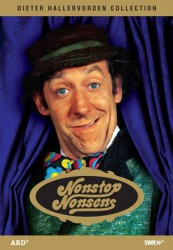

")
 
 IMDB-Wertung: 7.8 / 10
IMDB-Wertung: 7.8 / 10  Metascore:
Metascore: 
Das Konzept der Serie bestand darin, eine mit im hohem Maße an Slapstick versehene Geschichte zu erzählen, die immer wieder durch einzelne Sketche unterbrochen wurde. Keine Albernheit wurde ausgelassen, kein Blödsinn war zu flach, um nicht doch noch das (Studio-) Publikum zum Lachen zu bringen. Zum Markenzeichen der Serie wurde "Der gespielte Witz", dessen Klassiker "Palim Palim - Eine Flasche Pommes, bitte!" zum Synonym für Hallervordens Komik wurde.
Jahr: 1975
Dauer: 41 Minuten
FSK:
Land: West-Deutschland Studio: Turbine Medien GmbHTonspuren:
Untertitel:
Auflösung: SD (640x488) Größe: 128000 MB
Regisseur: Heinz Liesendahl
Drehbuch: Willie Hagan
Soundtrack:
Darsteller:
 Dieter Hallervorden als Didi
Dieter Hallervorden als Didi Herbert Fux als Gauner und Hypnotiseur
Herbert Fux als Gauner und Hypnotiseur Brigitte Mira als Didis Schwiegermutter
Brigitte Mira als Didis SchwiegermutterDatei: X:\Dokumentationen\Comedy\Nonstop Nonsens\e01 Herr Slap und das verpasste Rendezvous.mkv seit 24.01.2017
Festplatte: HD Serien(SU-Z)+Dokus+Musik
 Es gibt insgesamt 30 Filme in der Gruppe 'Dokumentationen\Comedy'
Es gibt insgesamt 30 Filme in der Gruppe 'Dokumentationen\Comedy'